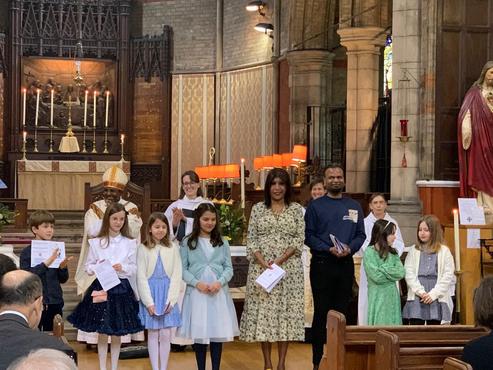

We gladly baptise new members of whatever age into the family of God — praying for them as they embark on their pilgrimage of faith.
At Emmanuel we gladly baptise new members of whatever age into the family of God, praying for them as they embark on their exciting journey and pilgrimage of faith.
Our baptism services tend to take place at our 10:30 service on the third Sunday of the month. If you'd prefer, we can also offer baptism at our 9:15 Joyful Noise service.
Through baptism we are welcomed into the family of God and the life of the Church. We baptise people of every age — infants, children and adults alike — and walk with each household as they prepare.
We have a confirmation service once a year. Confirmations are taken by the Bishop and are the occasion for baptised people to 'confirm' the vows that were made on their behalf when they were baptised.
At Emmanuel we admit to First Holy Communion those children who would like to take part in the Eucharist but are not yet old enough to be confirmed. We encourage children to wait to be confirmed until they are much older (around 16 or older), but invite them to participate fully in the sacrament of Holy Communion from around age 8. Admission typically takes place on Good Shepherd Sunday, following a series of 6–8 sessions teaching about the Eucharist.

From the youngest children admitted to First Holy Communion, to those confirmed by the Bishop, we walk with each person as they take their next step in the life of faith — surrounded by the prayers of the whole community.
Speak to the parish office →Whatever your age, there is a place for you in the family of God at Emmanuel. We would love to walk this journey with you.